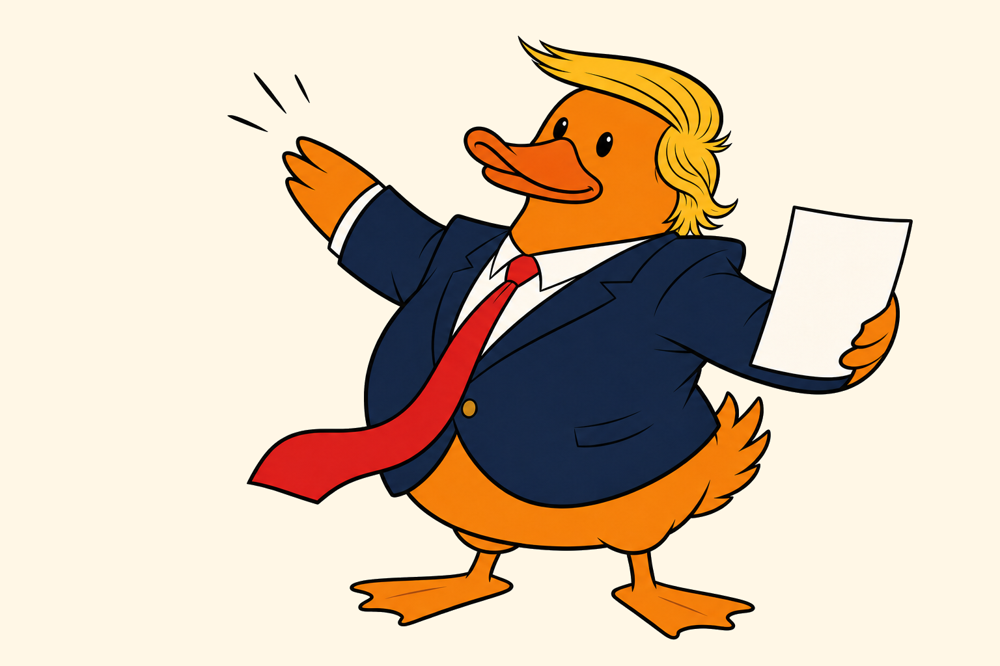

New original art
Perfect. The paper agrees.
№ 001
An original political satire
He thought the throne came with lifetime nesting rights. The calendar had other plans.
Satire notice: Duck world. Real swagger. No live election data.

Pond wire Crown fitting postponed Palace insists wobble is seasonal Advisor Duck seen carrying receipts
Issue 001 · The royal address
The first dispatch in an original comic about power, panic, and the awkward distance between a crown and the asphalt.
New original art
№ 001
Recurring dispatch
A running chronicle of one bird’s brave campaign against arithmetic, gravity, and the passage of time.
No invented odds. No fake live dashboard. Just clearly labeled satire until verified public data earns a place on the page.
Now watching
Both wings on the throne. Eyes on the exit.
Developing slowly
Receipt folder thickening by the hour.
Official position
Perfectly stable, according to the crown.
The merch nest
The first pond artifact is ready for inspection: a glossy 3-inch sticker built from the accepted original launch art. It remains preview-only until the provider account and checkout are real.
See the first item 3-inch sticker · $6 hypothesis
3-inch sticker · $6 hypothesis
Every public performance gets translated into pond logic.
The joke aims at power, conduct, and institutional absurdity.
No borrowed characters, costumes, logos, or visual shortcuts.
About the property
Donald the Lame Duck is an original political satire comic about public conduct, institutional absurdity, and power pretending the calendar is optional.